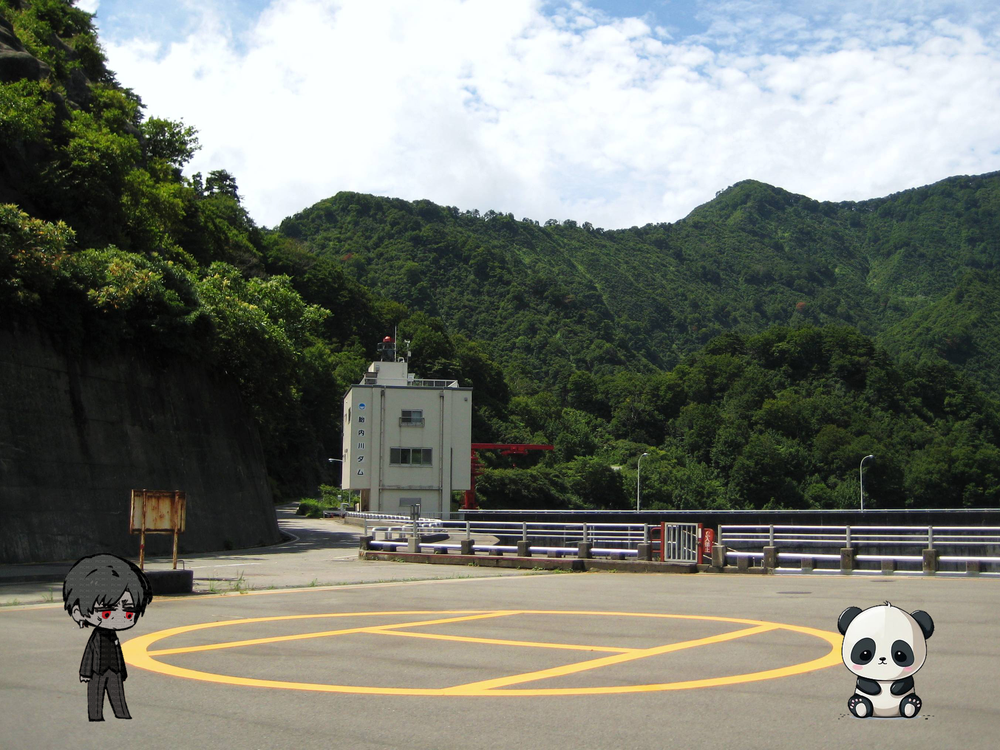

En tan solo 3 horas nos acercamos a lo que parecía ser una isla volcánica en un sitio remoto de Japón.
"Qué estará cocinando el choko..."
"No sé Edd, pero esta es una muestra más del poder económico de la NASA."
"Te lo juro."
Efectivamente, ese era el destino.
Nos recibieron dos "asistentes de Aze"; Bauti, que hacía de guia principal y El Pandin, que era mudo, y nos guiaron hasta el punto de reunión.